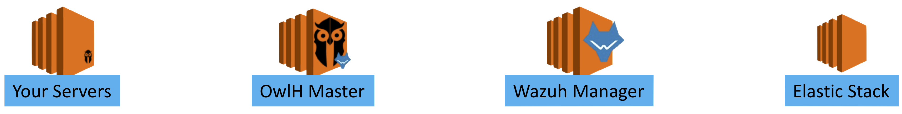

Software TAP for AWS and GCloud - PULL MODE¶
OwlH Software TAP to monitor traffic in Cloud and remote sites environments¶
OwlH Software TAP (sTAP) will collect full or specific traffic from your instances and forward it to OwlH Master that will run the Network IDS tool to do the analysis.
This doc will describe a basic configuration using CentOS instances, Zeek and Suricata Network IDS and Wazuh Integration. (other Linux distributions as well as Windows Support is available)
There are a lot of moving pieces, feel free to ask for help support@owlh.net. This doc will try to simplify deployment but for sure it will need some customization as well as may need some architecture understanding.
Main steps:
- Introduction: How does it work?
- Prepare your environment
- Option: Create an administration network
- OwlH Master
- Suricata NIDS
- BRO NIDS
- Wazuh Integration
- Default configuration settings
- Register your instances
- Define Instances settings
- Configure your instance
- Enjoy it
Introduction: What does SotwareTAP do and how does it work?¶
Software TAP is for capture traffic in remote instances, transport captured traffic to a central analysis platform, analyze the traffic and alert. It works in any environment, but it is really useful when you need this visibility in a cloud environment.
Main Components¶
There are different components.
- OwlH Master
- Orchestration
- Dummy Interface
- Network IDS
- Target Instances
- Storage and Visualization
- Wazuh Integration
Note
For cloud like AWS or Google Cloud should be good idea to deploy our instances with two different network interfaces, so we can use main interface as public service interface and secondary for management propouses, as traffic forward from instances to OwlH system

- A more detailed block diagram
OwlH Master Orchestration¶
Prepare OwlH Master software¶
# sudo curl https://raw.githubusercontent.com/owlh/owlhmaster/master/Software TAP/config.sh > /tmp/configure_OwlHmaster.sh
# sudo bash /tmp/configure_OwlHmaster.sh
# rm /tmp/configure_OwlHmaster.sh
OwlH Master ssh Key¶
- Copy your owlh master ssh key to your instances /tmp folder. Be sure it is in the right place.
# scp /home/owlh/.ssh/owlhmaster.pub user@1.1.1.1:/tmp/owlhmaster.pub
Note
change user and 1.1.1.1 as required or please, follow your own deployment process to ensure that the owlh master pub key is in place on each instance.
Create Dummy interface for Network IDS¶
# sudo curl https://raw.githubusercontent.com/owlh/owlhostnettap/master/dummy.sh.centos7 > /tmp/dummy.sh
# sudo bash /tmp/dummy.sh
# rm /tmp/dummy.sh
Network IDS support¶
Continuous Network IDS monitor and sniffing¶
We will help to have a better continuous monitoring by using a configuration based on a dummy network interface and running Network IDS solutions continuously. PCAPS will be injected using TCPREPLAY script in the dummy interface.
Deploy Suricata as Network IDS¶
Suricata deployment script will help you to deploy Suricata 4.0.4 from source code in a CentOS 7 box.
If you prefer a different way to deploy suricata, please follow Suricata documentation.
Run Suricata IDS
Deploy Zeek as Network IDS¶
Zeek deployment script will help you to deploy Zeek IDS from source code in a CentOS 7 box.
If you prefer a different way to deploy Zeek, please follow Zeek documentation.
Run Zeek IDS
OwlH Master Configuration¶
OwlH Master Configuration for Software TAP
We call flock Controller the main process that will drive Software TAP functionality. This is the default configuration file that you will find in your /etc/owlh/ folder.
{
"pidfile" : "/tmp/flock.pid",
"logfile" : "/var/log/owlh/flock.log",
"inventory" : "/etc/owlh/inventory.conf",
"owlh_user" : "owlh",
"owlh_user_key" : "/home/owlh/.ssh/owlhmaster",
"max_cpu" : "25",
"max_mem" : "25",
"max_storage" : "80",
"capture_time" : "60",
"default_interface" : "ens33",
"filter_path" : "/etc/owlh/filter.bpf",
"local_pcap_path" : "/usr/share/owlh/in_queue/",
"pcap_path" : "/usr/share/owlh/pcap/",
"owlh_interface" : "owlh",
"suricata_on" : "True",
"bro_on" : "True"
}
BPF filter
You can specify what traffic to be captured if you don’t want to capture everything. Main and default configuration will provide filter to not collect management traffic from OwlH master to your agents.
Remember this filter must be deployed into each one agent. be sure it is on each one of your servers.
Your bpf filter should be at least something like this
not host 1.1.1.1 and not port 22
Where 1.1.1.1 must be replaced with your OwlH master ip that will connect to your server.
Target Instances¶
We will need some tools and a user in each one of your servers in order to coordinate the traffic capture functionality
- Create and configure owlh user in your servers
The owlh user will be use by OwlH Master Orchestrator to run traffic capture and collect pcap files. to create user and configure it please follow this script:
#!/bin/bash
# Created 28.02.18
# v0.1 24.05.18 master@owlh.net
# tested in amazon Linux instance
# tested GCLOUD - centos7 - CIS version
# NOTE -- run this script in a server using
# sudo bash owluser-setup.sh
sudo adduser owlh
echo "create owlh user ssh folder"
sudo -u owlh mkdir /home/owlh/.ssh
echo "setting ssh folder permissions"
sudo -u owlh chmod 700 /home/owlh/.ssh
echo "create authorized keys file"
sudo -u owlh touch /home/owlh/.ssh/authorized_keys
echo "setting authorized keys permissions"
sudo -u owlh chmod 600 /home/owlh/.ssh/authorized_keys
echo "include owlmaster key"
echo "be sure you have your owlh master pub key in /tmp/owlhmaster.pub file"
sudo cat /tmp/owlhmaster.pub >> /home/owlh/.ssh/authorized_keys
echo "Allow owlh user to login with ssh"
sudo sed -i '/^AllowUsers/s/$/ owlh/' /etc/ssh/sshd_config
sudo systemctl restart sshd
echo "install tcpdump"
if ! sudo yum list installed tcpdump ; then
sudo yum -y install tcpdump
fi
# Allow owlh use tcpdump with sudo without password
echo "allow user owlh to use tcpdump and chown"
#sudo sed -i '/^%wheel/a owlh ALL=(ALL) NOPASSWD: /usr/sbin/tcpdump' /etc/sudoers
sudo echo "owlh ALL=(ALL) NOPASSWD: /usr/sbin/tcpdump, /usr/bin/chown" >> /etc/sudoers.d/owlh
# Prepare owlh related stuff folder
echo "prepare owlh stuff folders /etc, /var/log, /usr/share"
sudo mkdir /etc/owlh
sudo mkdir /var/log/owlh
sudo mkdir /usr/share/owlh
sudo mkdir /usr/share/owlh/pcap
sudo chown owlh /etc/owlh
sudo chgrp owlh /etc/owlh
sudo chown owlh /var/log/owlh
sudo chgrp owlh /var/log/owlh
sudo chown -R owlh /usr/share/owlh
sudo chgrp -R owlh /usr/share/owlh
#sudo echo "not host 10.164.0.4 and not port 22" > /etc/owlh/filter.bpf
# clean and end
echo "should be done. Enjoy your day."
Script also includes tcpdump installation as part of the traffic capture stuff. Please be sure you have tcpdump running before continue. This step is only needed if you don’t have tcpdump installed yet.
echo "install tcpdump"
if ! sudo yum list installed tcpdump ; then
sudo yum -y install tcpdump
fi
# Allow owlh use tcpdump with sudo without password
echo "allow user owlh to use tcpdump and chown"
#sudo sed -i '/^%wheel/a owlh ALL=(ALL) NOPASSWD: /usr/sbin/tcpdump' /etc/sudoers
sudo echo "owlh ALL=(ALL) NOPASSWD: /usr/sbin/tcpdump, /usr/bin/chown" >> /etc/sudoers.d/owlh
Modify your bpf filter file.
Register your servers¶
We need to know a little bit about your network. At least, we need to know what are the servers that you want to capture traffic from.
Please, include in your OwlH server inventory file all your servers /etc/owlh/inventory.json. Define them as needed but keep json format.
[
{
"id" : "1",
"name" : "agent-1-openrules",
"ip" : "192.168.1.218",
"enabled" : "true",
"active" : "true"
},
{
"id" : "2",
"name" : "agent-2-217",
"ip" : "192.168.1.217",
"enabled" : "true",
"active" : "true"
}
]
Wazuh system¶
Be sure you have at least one Wazuh manager and elastic stack working before to continue. Please follow Wazuh documentation.
Integrate OwlH master with Wazuh¶
Integrate OwlH master with Wazuh is pretty easy. We only need to deploy our Wazuh agent into the OwlH master. Follow Wazuh agent deploy instructions for RPM packets to deploy the agent.
in summary, you will set up the repository by running the following command:
# cat > /etc/yum.repos.d/wazuh.repo <<\EOF
[wazuh_repo]
gpgcheck=1
gpgkey=https://packages.wazuh.com/key/GPG-KEY-WAZUH
enabled=1
name=Wazuh repository
baseurl=https://packages.wazuh.com/3.x/yum/
protect=1
EOF
and now, install wazuh agent
# yum install wazuh-agent
now, lest register agent into your Wazuh Manager. if you are using authd on your manager:
# register agent
/var/ossec/bin/agent-auth -m 1.1.1.1 -A owlhmaster
A few things here:
1.1.1.1 # is your wazuh manager ip
-A # option means that you want to specify a name other than hostname.
# This command suppose tcp/1515 port used,
# if not, you should change command to include the right port.
Please review, authd documentation or find a different way to register your agent. Register agent documentation
Finally, modify your ossec.conf file to monitor your suricata output
<localfile>
<log_format>syslog</log_format>
<location>/var/log/suricata/eve.json</location>
</localfile>
And restart your wazuh agent
$ systemctl restart wazuh-agent
Enjoy It¶
Start Software TAP
# is everything in place?
# start Wazuh
# start Suricata
# start Zeek
# start Flock Controller
If you need help:¶
- email our support team - support@owlh.net
- visit our mailing list - OwlH mailing list (owlh@googlegroups.com)
OwlH - current v0.10.x - Oct - OwlH Changelog
documentation last updated - Nov 01, 2019